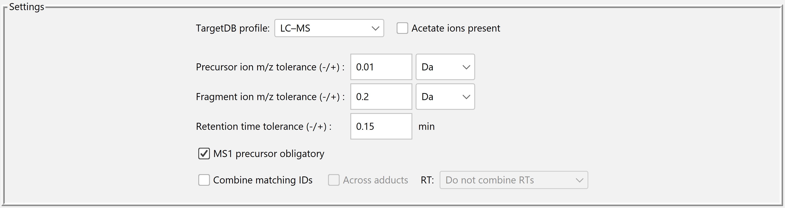

Select an acquisition profile
- LC-MS
- Use for measurements separated by liquid chromatography.
- Direct-infusion MS
- Use for shotgun acquisitions, including MSALL.
- MS imaging
- Use with suitable MS1 and MS² evidence. Check the imaging input requirements.
Acetate ions present selects acetate for the affected negative-mode adducts. Leave the box clear when your method used formate.
Match the precursor and fragment evidence


- Precursor and fragment m/z tolerances
- Set each mass window and its unit, ppm or Da. Low-resolution MS² fragments can require a different window from a high-resolution precursor.
- Retention time tolerance
- For LC–MS², enter the window in minutes used to associate evidence at similar retention times. Direct infusion has no chromatographic retention time.
- MS1 precursor obligatory
- Select this when an identification must have corresponding MS1 precursor evidence in the search results.
Choose what one output row represents
For individual precursor entries, leave Combine matching IDs clear. If you enable it, Across adducts can combine matching forms, and the RT menu lets you keep retention times separate, combine within the tolerance, or combine across all retention times. A combined row keeps the highest LP score in the group.
Record this choice when reporting counts or FDR. Several precursor annotations can describe the same molecular species, so grouping changes the denominator.
Keep a reproducible record
Choose the workspace and output paths before selecting Compute. LipidProphet saves a workspace with the effective settings, including a copy in the results directory. For a second analysis, give the output a new filename so the two results are easy to compare.